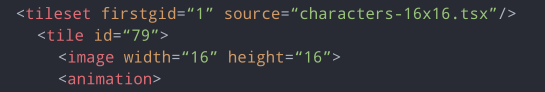
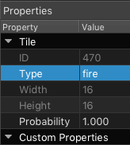

View on GitHub
View on GitHub
 Working with Tiles Reference
Working with Tiles Reference
Working with Tiles
- Tile Render Mode
- Querying Tiles at Location
- Querying Tiles with ID
- Tile Flags
- Find Tiles of Type
- Find Tiles with Property
- Adding and Removing Tiles
- Copying Tiles
- Tile Shapes
- Animated Tiles
- Physics
- Tile Overlap
SKTiled provides several ways to work with tiles in your tilemap. Most of the methods for accessing tiles from a tile layer instances have corresponding methods in the parent SKTilemap node, which will aggregate the results from all tile layers.
Tile Render Mode
Once your tilemap is loaded, you may tweak the way tiles are rendered individually via the SKTile.renderMode property:
| Mode | Description |
|---|---|
| default | Tile renders at default settings. |
| static | Tile ignores any animation data. |
| ignore | Tile does not take into account its tile data. |
| animated | Animate with a global id value. |
// instruct tile to ignore animation
tile.renderMode = TileRenderMode.static
// tile will animate with a global id of 129
tile.renderMode = TileRenderMode.animated(129)
The SKTile.renderMode flag allows you to quickly manipulate the appearance of a tile. While the animated case implies that the tile should be animated, setting this value with any global id effectively makes the tile take the appearance of another. Be aware, however, peoperties in the new tile data are not carried over to this tile… the original data still exists.
Querying Tiles at Location
Accessing tiles is simple: simply query a tile layer or the tile map node for tiles at a given coordinate:
// return tile(s) at a given location
let coord = simd_int2(10, 8)
// query tiles from a layer at the given coordinate
let tilesForCoord = tileLayer.tileAt(coord: coord)
// query tiles from tilemap at the given coordinate
let allTilesForCoord = tilemap.tilesAt(coord: coord)
Querying Tiles with ID
Global ID
To query tiles with a global ID, pass the value to either the SKTilemap node, or an individual SKTileLayer node:
// query tiles from the tile map node
let tiles = tilemap.getTiles(globalID: 10)
// query tiles from the parent layer
let tiles = tileLayer.getTiles(globalID: 10)
Local ID
If you have a reference to a tileset object and want to query tile data with a local id, use the SKTileset.getTileData(localID:) method. Here’s a reference to an external tileset with a firstgid value of 1. So if we want to access tile data with a local id of 79, we can query the tileset instance directly:

if let tiledata = tileset.getTileData(localID: 79) {
print(tiledata)
}
// Tile ID: 78 @ 16x16, 6 frames
As you can see, the tile data is correctly returned. The local ID is the sum of the tileset’s firstgid value plus the tile’s internal ID: (1 + 78 = 79).
Tile Flags
Each tile instance has a tileID property which accepts a UInt32 value and applies tile flip flags accordingly.
// a global id of 2147483659 translates to 11, with horizontal & diagonal flip flags
let tile = tilemap.getTiles(globalID: 11).first!
let globalId = tile.tileID
tile.isFlippedHorizontally = true
Tile Alignment
[put gif here showing alignment/anchorpoint changing}
Find Tiles of Type
The string property type can be used to label or group tiles in SKTiled. Adding a string property to a tile ID will allow it to be accessed from SpriteKit:

Querying any tile with that property is simple:
let allFireTiles = tilemap.getTiles(ofType: "Fire")
let fireTiles = tileLayer.getTiles(ofType: "Fire")
Find Tiles with Property
You are not restricted to using type as a property name - any property name/value can be queried:
let fireTiles = tilemap.getTilesWithProperty("Attack", "Fire")
let waterTiles = tilemap.getTilesWithProperty("isWater", true)
Adding and Removing Tiles
To add a new tile using a GID, use the SKTileLayer.addTileAt method to add it to the current layer:
if let tile = tileLayer.addTileAt(coord: simd_int2(5, 8), globalID: 32) {
tile.setupPhysics(withSize: 8)
}
You may also specify a tile type with this method, for use with the SKTilemapDelegate.objectForTileType protocol method:
if let wallTile = tileLayer.addTileAt(coord: simd_int2(2, 17), globalID: 145, tileType: "Wall") {
// set the custom tile property
wallTile.hitMaxCount = 3
}
You are not limited to using tile objects; any SKNode type can be added to a layer and positioned. All SKTiledLayerObject objects have expanded addChild convenience methods for positioning nodes:
// add a child with a coordinate and offset and zPosition values
tileLayer.addChild(tile, 5, 8, offset: CGPoint(x: 4.0, y: 8.0), zpos: 50)
// add a child with a coordinate and offset-x value
tileLayer.addChild(tile, 5, 8, dx: 4)
To remove a tile, simply call one of the SKTileLayer.removeTileAt methods:
if let removedTile = tileLayer.removeTileAt(10, 8) {
// do something with tile
}
Copying Tiles
Tiles can be copied for use as regular sprites, simply use the SKTile.spriteCopy method to copy a tile to a regular SKSpriteNode instance.
Tile Shapes
It is also possible to create shapes from individual tiles. All SKTiled geometry types have a getVertices() method which will return an array of points that constitute the object’s shape.
let tileVerts = tile.getVertices()
Animated Tiles

Tile animations exist within the SKTilesetData class, accessible via the SKTilesetData.frames property. To check whether the tileset data is animated, simply query the SKTileset.isAnimated attribute.
Tile animations in Tiled will render if you add your tilemap instance to your SpriteKit scene’s SKScene.update method. Animated tiles are easily accessed with the parent SKTileLayer.animatedTiles method, or globally via the SKTilemap.animatedTiles method:
// return animated tiles in a single layer
let animatedTiles = tileLayer.animatedTiles()
// return all animated tiles
let allAnimatedTiles = tilemap.animatedTiles()
All SKTile instances allow you to pause and change the animation speed:
// pause or unpause tile animation
for animatedTile in animatedTiles {
animatedTile.isPaused = true
}
// double animation speed
for animatedTile in animatedTiles {
animatedTile.speed = 2.0
}
// run animation backwards
for animatedTile in animatedTiles {
animatedTile.speed = -1
}
Be aware that updating animation speed on objects running SpriteKit actions doesn’t always work correctly. See the SpriteKit Actions section for more details.
To toggle animation on an individual tile (or tile object), use the SKTile.enableAnimation flag:
// enable animation on a tile instance
tile.enableAnimation = true
// disable animation on a tile object
object.enableAnimation = false
To stop animation, use the SKTile.removeAnimation(restore:) method to remove the animation, and the SKTile.runAnimation method to restore it:
// remove the animation (optionally restore the original texture)
for animatedTile in animatedTiles {
animatedTile.removeAnimation(restore: true)
}
// restart tile animations
for animatedTile in animatedTiles {
animatedTile.runAnimation()
}
Updating Tile Animation
It’s easy to add or change the animation for tile objects, but bear in mind that as SKTilesetData objects are still linked to their parent tileset, changing or removing animation one will change every tile that references that data.
To change the animated frames of a tile, you will first need to access the tile data, either from the tile itself, or the parent tileset:
// access from tile
let tileData = tile.tileData
// access from tile
let tileData = tileset.tileData
To add animation to a tile, add ID values to the SKTilesetData instance. Frame durations are stored in milliseconds to match Tiled’s:
tileData.addFrame(withID: 33, interval: 250)
tileData.addFrame(withID: 34, interval: 350)
tileData.addFrame(withID: 35, interval: 150)
You also have the option of manipulating frames directly:
// set the texture for a specific frame. The old texture is returned (if one exists)
let jumpTexture = SKTexture(imageNamed: "jump-alt-002")
let oldTexture = tileData.setTexture(jumpTexture, forFrame: 2)
// change the frame interval for a frame (in milliseconds)
if tileData.setDuration(interval: 200, forFrame: 2) {
print("frame 2 duration is now 200!")
}
SpriteKit Actions
You might get better CPU usage if you render tile animations with SpriteKit actions. See the SpriteKit Actions section for more details.
Physics
Physics can be turned on for tile objects with the SKTileObject.setupPhysics methods. Passing the argument isDynamic determines whether the physics body is active or passive.
// create a physics body with a rectangle of size 8
tile.setupPhysics(shapeOf: .rectangle, isDynamic: true)
// create a physics body with a rectangle of size 8
tile.setupPhysics(rectSize: CGSize(width: 8, height: 8), isDynamic: true)
// setup dynamics on an array of tiles with a radius of 4
let dots = dotsLayer.getTilesWithProperty("type", "dot" as AnyObject)
dots.forEach { $0.setupDynamics(radius: 4) }
Tile Overlap
The tile overlap value is used to help alleviate the “cracks” that sometimes appear when the tilemap or worldNode is scaled. The value is clamped with the SKTile.maxOverlap value. Usually a value between 1.0 - 3.0 is effective. While you can set the overlap value on individual tiles & tile layers, for best results set it via the SKTilemap.tileOverlap property:
// this will override values for every tile
tilemap.tileOverlap = 1.0
// set the overlap for an entire layer
tileLayer.setTileOverlap(1.0)
// set the overlap on individual tiles
tile.setTileOverlap(1.0)
Next: Coordinates - Index